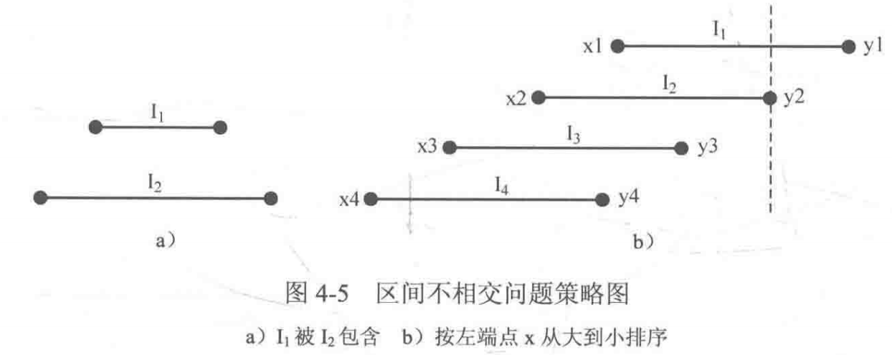

贪心
贪心是只考虑当下的一种局部最优（或较优），来使全局结果达到最优（或较优）的策略。
证明策略是最优（或较优）的：反证法、数学归纳法【证明较复杂，若有不错的思路且无法找到反例，直接实现即可】
简单贪心
🌰 PAT B1020（卖月饼P118）
📣 只在乎销售额，只要每次选最贵的就能达到总销售额最多（贪心）。
#include<cstdio>
#include<algorithm>
using namespace std;
struct mooncake { // 结构体整合输入数据
double store; // 库存
double sell; // 总价
double price; // 单价（库存除总价）
}cake[1010];
bool cmp(mooncake a, mooncake b) {
return a.price > b.price;
}
int main() {
int n; // 月饼种类数
double D; // 月饼需求量
scanf("%d%lf", &n, &D);
for(int i = 0; i < n; i++) { // 输入库存
scanf("%lf", &cake[i].store);
}
for(int i = 0; i < n; i++) { // 输入总价 并计算单价
scanf("%lf", &cake[i].sell);
cake[i].price = cake[i].sell / cake[i].store;
}
sort(cake, cake + n, cmp); // 按单价从高到低排序
double ans = 0; // 收益
for(int i = 0; i < n; i++) { // 遍历排序后的月饼列表cake
if(D >= cake[i].store) { // 需求大于供应
D -= cake[i].store;
ans += cake[i].sell; // 该类月饼全部卖出
} else { // 需求小于供应
ans += cake[i].price * D; // 需求全部满足
break;
}
}
printf("%.2f\n", ans);
return 0;
}
🌰 PAT B1023（组个最小数）
📣 只要每次都拿最小的数放在最高位，最后组成的数必然最小（贪心）。
#include<cstdio>
int main() {
int count[10]; // 记录数字0~9的个数
for(int i = 0; i < 10; i++) {
scanf("%d", count + i); // 录入0~9各数字个数
}
for(int i = 1; i < 10; i++) {
if(count[i] > 0) {
printf("%d", i); // 输出除0外最小的数作为最高位
count[i]--;
break;
}
}
for(int i = 0; i < 10; i++) {
for(int j = 0; j < count[i]; j++) { // 把i输出count[i]次
printf("%d", i);
}
}
return 0;
}
区间贪心
给出若干小区间，看最多能塞多少个
#include<cstdio>
#include<algorithm>
using namespace std;
const int maxn = 110;
struct Interval{
int x, y;
}I[maxn];
bool cmp(Interval a, Interval b) {
if(a.x != b.x) return a.x > b.x; // 左端点从大到小
else return a.y < b.y; // 左端点相同时，右端点从小到大（写b.y > a.y容易理解错）
}
int main() {
int n;
while(scanf("%d", &n), n != 0) { // 输入提供选择的区间个数
for (int i = 0; i < n; i++)
{
scanf("%d%d", &I[i].x, &I[i].y); // 顺序输入区间的左右端点
}
sort(I, I + n, cmp); // 把区间排序
int ans = 1, lastX = I[0].x; // ans记录不相交区间数，lastX记录上一个被选区间的左端点
for(int i = 1; i < n; i++) {
if(I[i].y <= lastX) { // 若该区间右端点在lastX左边
lastX = I[i].x; // 以I[i]作为新选中的区间
ans++; // 区间数++
}
}
printf("%d\n", ans);
}
return 0;
}
稍微复杂的贪心策略
